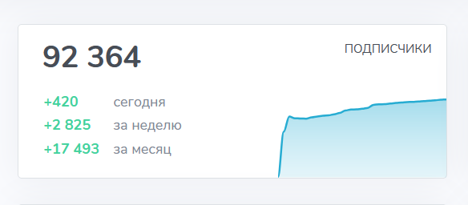

Кейс: рост Telegram-канала об инвестициях с 6,6k до 92k за 9 месяцев
x14
Рост аудитории
92k
Подписчиков
15–28%
ERR
Задача
Запуск и развитие Telegram-канала эксперта по инвестициям. Формирование личного бренда, регулярный контент и рост аудитории.

Этап 1 — Органика (0–3 месяца)
Создание контент-плана, запуск канала, личные истории + экспертные разборы. Рост аудитории с 6,6k до 25,8k подписчиков.

Этап 2 — Масштабирование (3–9 месяцев)
Подключение таргета и интеграций, лид-магниты. Рост аудитории до 92,3k подписчиков при сохранении стабильной вовлечённости.

Финальный результат
Рост аудитории в 14 раз за 9 месяцев. ERR осталась на высоком уровне. Эксперт закрепил личный бренд на рынке.
